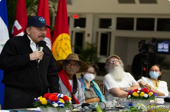

Daniel Ortega inventó un “tío abuelo obispo” para atacar con virulencia a la Iglesia
Su hermano Humberto Ortega lo desmiente: Marco Antonio Ortega no era un obispo “cómplice”, sino el abuelo que abogó por su padre Daniel Ortega en 1934
EMERGENCIA CORONAVIRUS
Covid-19 en ascenso: Minsa admite más de 200 contagios en la última semana
POLÍTICA
Victoria Cárdenas y Berta Valle exigen ver a Juan Sebastián Chamorro y Félix Maradiaga